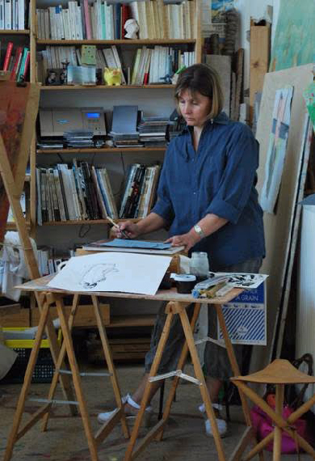

Articles sur Pascale Dupont
Biographie
Originaire, d'Embourg, Pascale Dupont nous livre aujourd'hui son univers pictural.
Dipômée de l'Académie des Beaux Arts de Liège (avec le premier prix), elle travaille quelques années dans l'enseignement artistique puis se consacre à sa famille; mais sans jamais perdre l'envie et le besoin de dessiner et de peindre. En tant que plasticienne, elle perçoit à chaque moment le monde qui l'entoure sous le biais de couleurs, de volumes, de traits, de pleins, de vides ...
Le travail qu'elle nous propose ici est une étude faite sur thème des "gens... parmis les gens". La foule, les rues... vues sous l'angle du spectateur. Le mouvement, les rencontres, l'anonymat, autant de thèmes qui nous concernent au quotidien. Quelques toiles aussi plus "intimistes" nous racontents les ambiances des bars, des cafés, des terrasses...
Pascale ne prétend pas vouloir diffuser un message particulier mais plutôt partager un ressenti et c'est au spectateur de s'y retrouver et de s'y plaire. Son outil et son art résident avant tous dans l'emploi et l'association des couleurs. Les techniques sont diverses: huil, acrylique, encre de chine... sur toile, carton, papier, bois... Les possibilités sont infinies.
Personne discrète, elle expose principalement depuis quelque années dans la province de Liège où elle choisit avec soin les endroits qu'elle préfère.
Son parcours
- Diplômes
- Académie Royal des Beaux-Arts de liège (1982-1986) 1er prix dessin et peinture de chevalet
- Diplôme d'aptitude pédagogique (1990) à Jonfosse
- Expérience
- Professeur d'arts plastiques à l'école d'enseignement spécial primaire et secondaire de la communauté française à Rencheux (Vielsam) pendant 5ans
- Animatrice d'ateliers créatifs pour enfants et atelier de peinture et dessin pour adultes. (Vielsam pendant 5ans)
- Travail personnel dans mon atelier
- Expositions: à Liège, Comblain, Esneux, Chaudfontaine, resto roture...